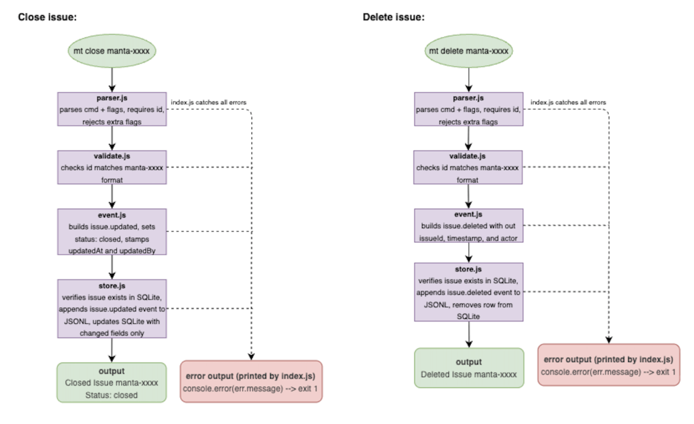

CLI reference
All commands
Every command starts with mt. Use the cheat sheet for a quick
lookup, or expand a section below for examples and notes.
Cheat sheet
| Command | Type | Summary |
|---|---|---|
mt init |
Setup | Initialize .manta/ in the current directory |
mt version |
Read | Print installed package version |
mt create |
Write | Create a new issue (title required) |
mt update |
Write | Change fields on an existing issue |
mt view |
Read | List or show issues (interactive in TTY) |
mt close |
Write | Mark an issue as closed |
mt delete |
Write | Remove an issue (with confirmation) |
mt sync |
Sync | Rebuild SQLite cache from the JSONL log |
Setup commands
mt init
SetupCreates .manta/ if it does not exist. Run once per project directory.
mt version
ReadPrints SemVer from package.json. No flags or arguments.
Issue commands
mt create
WriteNew issue with title + optional flags (priority, assignee, type, …).
Details ↓mt update
WriteChange one or more fields. Requires issue ID + at least one flag.
Details ↓mt view
ReadPaginated list or single-issue detail. Filters: --priority, --all, --cb.
mt close
WriteSets status to closed. Only the issue ID is required.
Details ↓mt delete
WritePermanently removes an issue after y/n confirmation.
Sync
mt sync
SyncRefresh SQLite from manta.jsonl after git pull.
Full command details
Expand any command for examples, flags, and tips.
mt init
Initializes Manta in the current working directory. Creates
.manta/ and required files if missing. No arguments or flags.
mt initmt version
Prints the installed Manta version. Subcommand only — mt --version is not supported.
mt version
# 1.3.0mt create
Creates a new issue. Title is required — pass it as a positional
argument or with --title / -t.
mt create "My new issue"
mt create "Bug fix" --desc "Repro steps" --priority p1 --type bug --assignee alice
Optional: --desc, --status, --priority,
--type, --assignee.
Full field reference →
mt update
Updates fields on an existing issue. Provide the ID plus at least one field flag.
mt update manta-h3kp --title "New title"
mt update manta-h3kp --status in_progress --priority p0mt view
Browse issues in an interactive table (TTY) or show one issue in detail. Press ESC to exit. Use ← / → to paginate the list.
mt view
mt view manta-h3kp
mt view h3kp # short ID works
mt view --priority p1
mt view --all # include closed
mt view --createdBy alice
mt view --cb alice # alias for --createdBymt sync first — view reads SQLite only and does not
replay the log by itself.
mt sync
Rebuilds the local SQLite cache from .manta/manta.jsonl. Cheap when
nothing changed; full replay when teammates’ events arrived via git.
mt sync
# Synced successfully.mt close
Closes an issue (sets status to closed). Only the issue ID is required.
mt close manta-h3kpmt delete
Deletes an issue permanently. Manta prompts for confirmation (y/n).
mt delete manta-h3kp